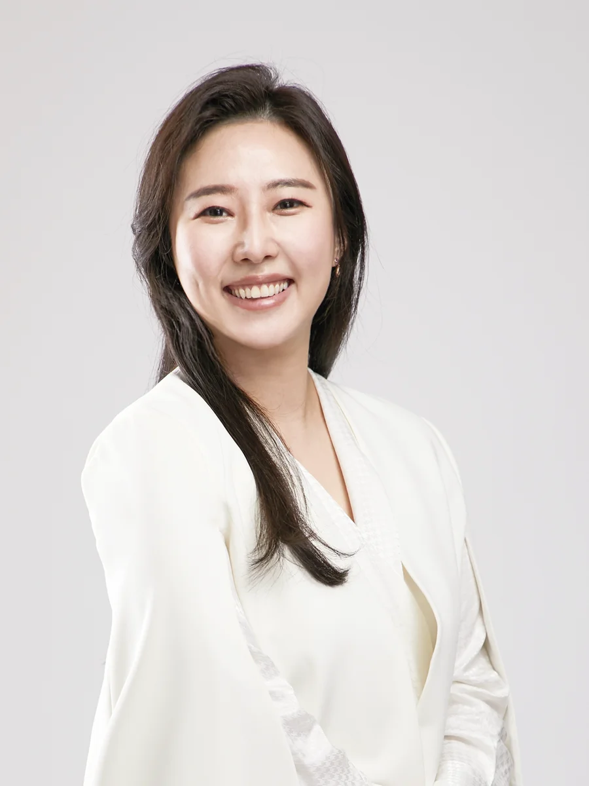
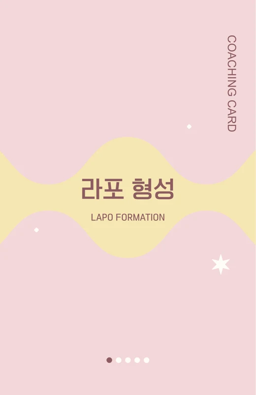
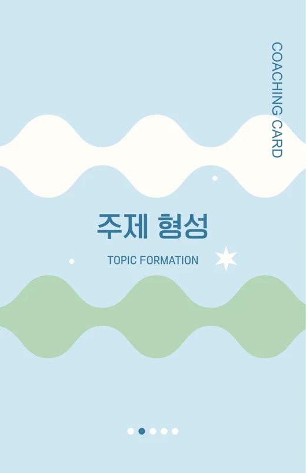
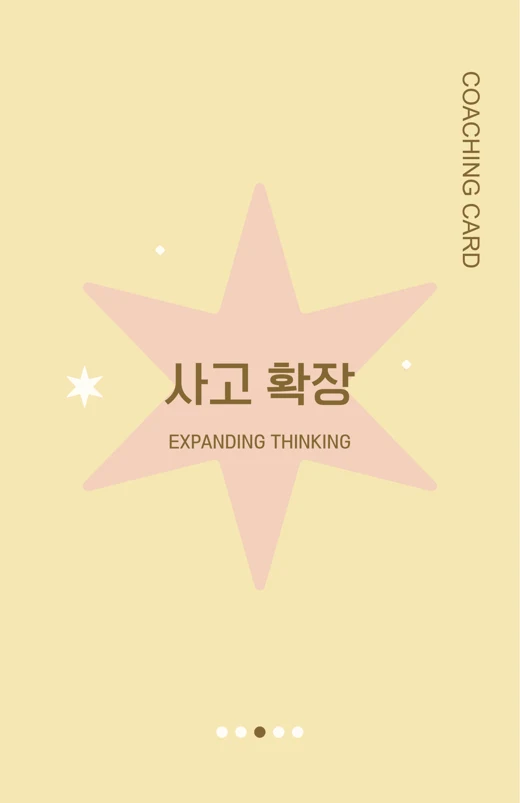
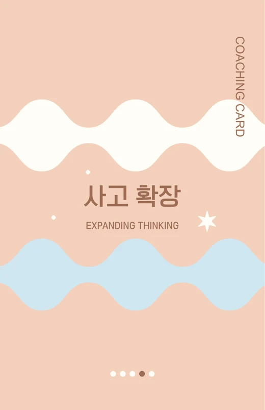
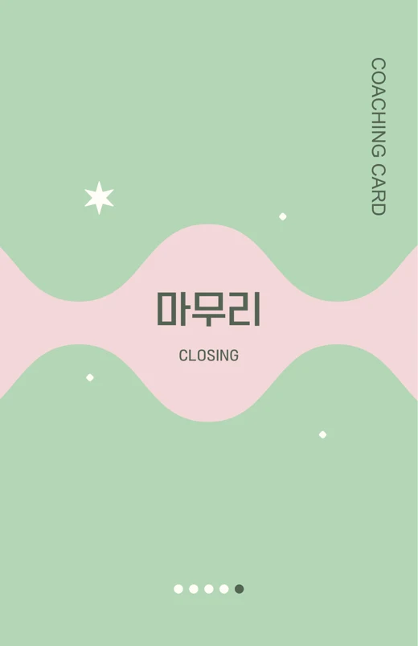
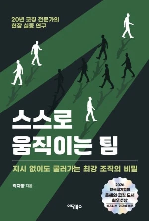

답을 주는 대신 질문으로, 리더와 팀이 스스로 움직이게 합니다.
코칭 · 코칭카드 · 저서로 리더와 팀의 변화를 돕습니다.

19년의 HRD·커리어 컨설팅 현장 경험 위에 국제 인증 코칭 역량을 더했습니다. 강의로 끝나지 않고, 질문과 실습으로 리더와 구성원의 행동 변화가 일어나도록 진행합니다.
질문과 실습으로 행동 변화를 이끄는 코칭 기반 퍼실리테이션
2017년부터 코칭·컨설팅 교육 진행. 커리어파트너스 코리아 수석 컨설턴트, 한국보건복지인재원·중앙소방학교 외래강사
현대엔지니어링 · 롯데쇼핑 · 코레일유통 등 대기업 현장 출신 교육과 실무를 모두 아는 강사
경희대 경영대학원 MBA 논문 「코칭리더십이 셀프리더십을 매개로 조직몰입에 미치는 영향」
『스스로 움직이는 팀』(2026) · 『올 어바웃 커리어』(2022)
『현장이 말하게 하라』(공저) 집필 중
NLP 프랙티셔너 · MBTI 전문강사 · 레고 시리어스 플레이 퍼실리테이션 · 직업상담사 2급 · NCS 활용 면접관·채용 분석관 · NCS 강사(직업상담서비스·직업교육·마케팅)
코칭은 대화 내용을 공개하기 어려워, 진행한 과정과 이력을 간단히 정리했습니다.
한국코치협회 인증코치를 길러내는 양성 과정
리더 대상 코칭리더십 교육
코칭 상담법 교육
컨설턴트 대상 코칭 특강
대학생 또래코치 양성 캠프
레고 시리어스 플레이 기반 퍼실리테이션
세종대 · 경희대 · 순천대 · 안동과학대 · 한국폴리텍대 · 안양대 · 백석대 · 백석문화대 · 영진전문대 · 울산대 · 울산과학대 · 한국외대 · 대구보건대 · 한밭대 · 건양대 · 목포과학대 · 덕성여대 · 우송대 · 한신대 · 선문대 외 다수
영화관광경영고 · 부평공업고 · 유한공업고 · 아산전자기계고 · 춘천기계고 · 논곡중 · 명현중 외 다수
코칭 대화를 다섯 단계로 나누고, 단계마다 꺼내 쓰는 카드로 만들었습니다. 처음 코칭을 배우는 사람도 대화의 흐름을 놓치지 않도록 돕습니다.






지시 없이도 굴러가는 최강 조직의 비밀
2026 한국코치협회 올해의 코칭 도서 최우수상
비즈니스·리더십 부문
20년 코칭 전문가의 현장 실증 연구. 지시하지 않아도 스스로 움직이는 팀은 어떻게 만들어지는지, 코칭 현장에서 확인한 내용을 담았습니다.
『올 어바웃 커리어』(2022) · 『현장이 말하게 하라』(공저, 집필 중)
교육 전후 변화를 확인하기 위해 직접 만들어 쓰는 도구입니다.
GitHub Pages로 직접 개발·배포한 웹 진단 도구. 교육 전후 진단에 활용.
코칭 개념과 질문 기술을 점검하는 웹 학습 도구. 과정 중 복습과 참여에 활용.
코칭 대화 5단계(라포 형성 · 주제 형성 · 사고 확장 · 계획 수립 · 마무리)를 따라 쓰는 자체 개발 카드.
직급 · 팀 상황 · 변화 과제에 맞춰, 행동 변화가 남는 과정으로 만들어 드립니다.